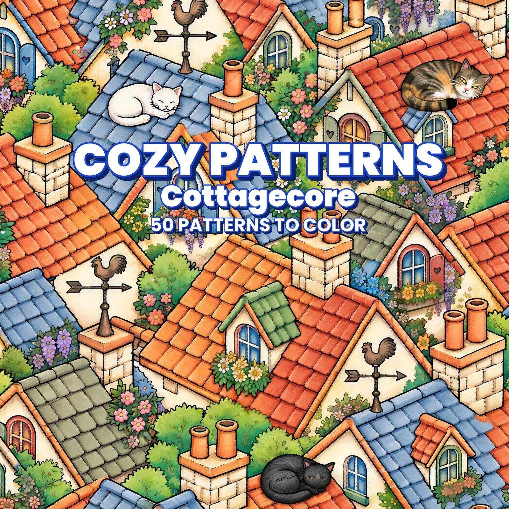

Mossgrove Press
Mossgrove Press

A Mossgrove Press world
Cozy Patterns
Full-page patterns to color, one cozy world of motifs at a time.
Every Cozy Patterns book is black line on white, no frame, art running edge to edge. Fifty patterns that are calm enough for a crayon and detailed enough for an evening with fine-liners, for grown-ups and children coloring the same book differently every time.
Get it on Amazon